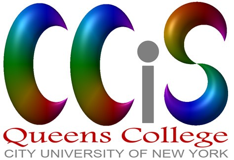
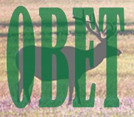

About OBET
(2016.1)
OBET is an internet gateway to information on the relationship between humans and nature. It is the largest such resource in existence, and is free for public use.
OBET focuses on ideas regardless of disciplinary area, covering any sort of inquiry into the relationship between humans and nature. Contributions range across philosophy, ethics, theology, anthropology, psychology, sociology, history, politics, law, agriculture, animal welfare, energy, industry, ecology, conservation, nature writing, art, literary criticism, education, and green living.
Like most academic databases, the main bibliography is completely searchable and sortable, and entries can be exported in generic formats. Unlike most academic databases, however, OBET is completely user-managed (by registered Members), and its contents are not limited to professional academic literature.
In addition to the main database, OBET contains several other resources, such as a collection of user-uploaded files, profiles of all members, and an annotated list of each of the journals whose entire contents are indexed. Several external databases and bibliographies are also linked so that they can be opened and utilized directly from OBET.
Membership
Anyone can enter as a guest and use OBET—this is one of the benefits of OBET being user-managed. Most extensive online bibliographic databases are only available for use by paid subscribers. However, only OBET Members can add and edit entries; provide comments on any work referenced in the database; and upload manuscripts, publications, images, links, and other materials for easy access by anyone. Each Member’s contributions to the database are acknowledged and maintained, and each Member is associated with a profile on the database; everyone can see which member added or edited each entry.
We are especially looking for Members who can help with various tasks that are of great importance to this new resource, including the mammoth project of converting entries from the existing ISEE Bibliography to OBET, summarizing books and book chapters, finding additional references, and compiling references to older (pre-1990) literature. Please contact the Curator to become involved in these and related projects, or with any suggestions.
Application for membership is quick and easy, and of course free. Either (1) send a request to the Curator (contact information below), with a bit about you, including your institutional affiliation if any, and the activities you would like to engage in on OBET that led you to apply; or else (2) click on “Log In / Join” at the top right of the OBET Login screen and provide the same information. You will receive an email in response, with (if your application is successful) a welcome and a temporary password—it will enable you to join OBET, choose a login name and your own password, and set up your personal profile. After you join, whenever you visit OBET simply Log In with your chosen name and password. For security reasons we will periodically ask long-inactive members to reapply.
The Future of OBET
Much work remains to be done before OBET is up to date, and of course it will require incessant maintenance to stay on top of the growing literature on our interaction with nature. Our hope is that the Online Bibliography of Environmental Thought, together with other online resources of the International Society for Environmental Ethics, will become a comprehensive aid to research and thought on the relationship between humans and the rest of the world. We are constantly adding material to OBET. Please let us know if you have ideas about how OBET may be improved. New material and new projects are welcome!
Donations and volunteers are always needed! Please contact the Curator for details (see below).
Who We Are
OBET is completely volunteer-managed, mainly by a Curator, and a support staff comprised mostly of college students in the New York City area.
OBET is located on an Apache Server at the Center for Computational Infrastructure for the Sciences at Queens College of the City University of New York. OBET is compiled and edited entirely by its registered Members, managed by a Curator in consultation with the Governing Board of ISEE and Prof. Holmes Rolston III. Prof. Rolston compiled the original ISEE Bibliography, which is still available (and essential until OBET is up to date), at http://www.cep.unt.edu/bib. OBET has received funding from the American Philosophical Association and the International Society for Environmental Ethics.
Curator of OBET, 2010 - :
Dr. David C. Lahti
Assistant Professor of Biology, Queens College
Doctoral Faculty in Biology and Psychology, The Graduate Center
City University of New York
OBET.Curator@gmail.com
(718) 997-3422
Chief Programmer: Teresa Wu
Manager of Contributions: Mark Megerian


